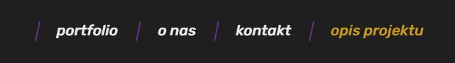
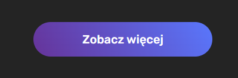
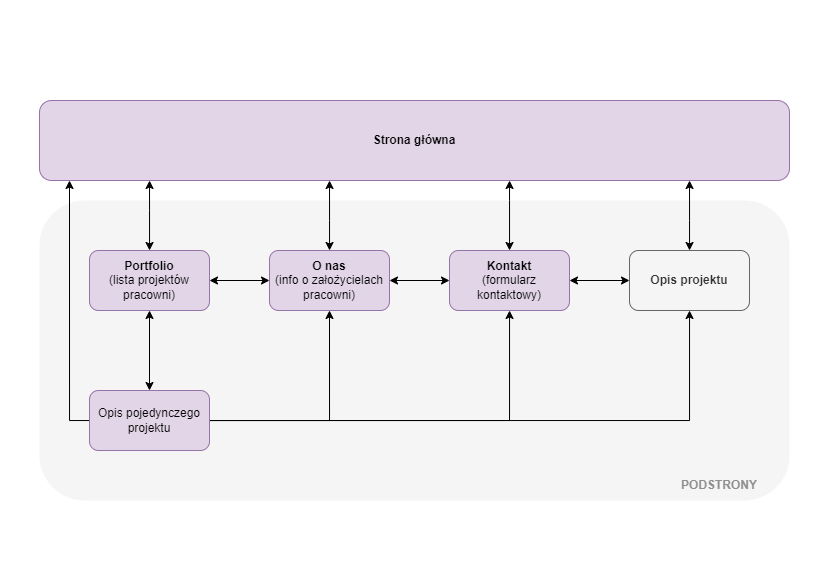
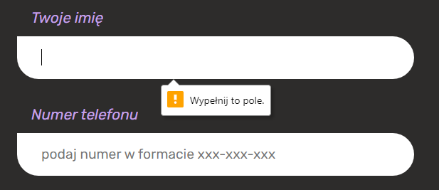
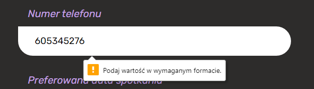
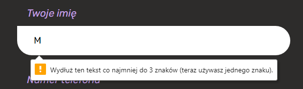
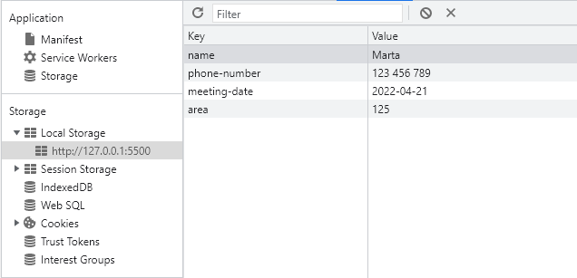
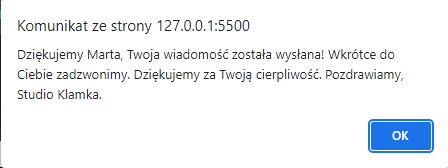

opis projektu
W ramach projektu zaliczeniowego przygotowano serwis internetowy dla małej pracowni architektonicznej o nazwie 'Studio Klamka'. Strona ma stanowić wizytówkę firmy - zawierać portfolio dotychczasowych projektów zrealizowanych przez pracownię, informację dla klientów o oferowanych usługach oraz formularz umożliwiający kontakt z pracownią.
Do budowy serwisu zastosowano technologie HTML5, CSS3, vanilla JavaScript.
Poniżej opisano najważniejsze założenia projektu i zastosowane rozwiązania:
nawigacja
Nawigacja główna serwisu została umieszczona w przeznaczonym do tego znaczniku html (nav) i zaprezentowana na stronie w formie paska nawigacyjnego przyklejonego do górnej krawędzi okna przeglądarki. Nawigowanie po serwsie odbywa się poprzez przekierowania (href) na kolejne podstrony po kliknięciu przez użytkownika odpowiedniej opcji na pasku nawigacyjnym. Każda podstrona jest odrębnym plikiem html, do którego następuje przekierowanie. Aby ułatwić użytkownikowi poruszanie się po serwisie, pasek nawigacyjny jest dostępny z każdego miejsca aplikacji, także podczas scrollowania.

Dodatkowo, na stronie głównej w odpowiednich sekcjach zostały umieszczone przyciski, które mają przyciągnąć uwagę użytkownika i zachęcić go do przejścia w określone miejsce w serwisie (tj. na konkretną podstronę).

Dostęp do podstrony zawierającej szczegóły pojedynczego projektu jest możliwy wyłącznie z poziomu podstrony zawierającej listę wszystkich projektów (portfolio).
Poniższy diagram obrazuje strukturę przekierowań na stronie:

struktura plików
- pliki html:
- index.html - strona główna aplikacji
- portfolio.html - podstrona zawierająca listę dotychczasowych projektów pracowni (dostęp z poziomu menu, zakładka 'portfolio')
- project-details.html - podstrona zawierająca opis pojedynczego projektu (dostęp z poziomu zakładki 'portfolio' po kliknięciu przycisku 'Dowiedz się więcej')
- about.html - podstrona zawierająca dane o architektach założycielach (dostęp z poziomu menu, zakładka 'o nas')
- contact.html - podstrona zawierająca formularz kontaktowy (dostęp z poziomu menu, zakładka 'kontakt')
- zaliczenie.html - podstrona zawierająca opis projektu (dostęp z poziomu menu, zakładka 'opis projektu')
- folder css:
- reset.css - w pliku znajdują się style resetujące domyślne stylowanie przeglądarek; celem jest ujednolicenie stylowania bez względu na przeglądarkę, z której korzysta użytkownik.
- main.css - plik zawiera stylowanie aplikacji. Do stylowania zastosowano czysty CSS, nie korzystano z zewnętrznych bibliotek ani frameworków CSS. Z uwagi na niewielki rozmiar aplikacji style znajdują się w jednym zbiorczym pliku. Dla ułatwienia zostały uporządkowane z podziałem na poszczególne sekcje i podstrony, których dotyczą. Każdej sekcji przypisano unikalny identyfikator (#id). Do stylowania używano głównie klas. Stylowanie w oparciu o id sekcji oraz klasę elementu pozwoliło uniknąć konfliktów i niezamierzonego stylowania elementów. Layout projektowano tak, aby był przejrzysty, niebanalny i prosty w obsłudze.
- variables.css - plik zawiera stylowanie własności i elementów, które występują w aplikacji co najmniej raz; takie podejście umożliwia ich ponowne użycie w prosty sposób poprzez przypisanie odpowiedniej klasy (podejście zgodne z regułą DRY - Don't Repeat Yourself). Dobrym przykładem są wszystkie przyciski na stronie, które zostały ostylowane poprzez dodanie przygotowanej klasy "btn" do każdego z nich. Pozwala to także zachować spójny UI całej aplikacji. W pliku znajdują się także kolory motywu aplikacji zapisane w formie zmiennych CSS, dzięki czemu można w szybki i prosty sposób zmienić kolorystykę całej strony.
- folder js:
- sticky.js - prosty skrypt, który nadaje klasę 'sticky' odpowiedniemu elementowi drzewa DOM. Klasa "sticky" została przygotowana w celu przyklejenia paska nawigacyjnego do górnej krawędzi okna przeglądarki przy scrollownaiu strony przez użytkownika.
- sendContactForm.js - skrypt wykonujący szereg czynności po wysłaniu formularza przez użytkownika; m.in. czyści formularz, zapisuje dane z formularza do bazy localStorage, wysyła powiadomienie do użytkownika.
-
folder images - zawiera zdjęcia (pliki jpg, png) użyte na stronie. Z uwagi na to, że projekt służy wyłącznie celom zaliczeniowym, pominięto podawanie źródeł i praw autorskich zastosowanych grafik; wszystkie pochodzą ze stron z darmowymi zdjęciami stockowymi.
responsywność i dostępność serwisu
W trakcie prac deweloperskich kładziono nacisk na następujące zagadnienia:
- semi-responsywność - przy budowaniu aplikacji zadbano o to, żeby była ona częściowo responsywna, tj. dostosowywała się dynamicznie do wielkości okna przeglądarki desktopowej, z której korzysta użytkownik. Dolnym marginesem dla responsywności jest rozdzielczość 1240 px (stąd użyte sformułowanie semi-responsywność). Oznacza to, że strona będzie wyświetlała się poprawnie także na większości tabletów w orientacji poziomej. Kolejnym krokiem rozwoju serwisu mogłoby być dostosowanie go do urządzeń mobilnych i małych tabletów, aby mogła być w pełni responsywna.
- dostępność - przy planowaniu aplikacji dużą wagę przywiązano do kwestii przejrzystości widoków aplikacji, a także dostępności aplikacji dla osób wykluczonych cyfrowo. Aplikację budowano z myślą o narzędziach wspomagających nawigowanie i czytanie stron. Dla przykładu:
- zdjęcia projektów oraz architektów zostały opisane przy pomocy atrybutu tekstu alternatywnego (alt),
- na stronie brak animowanych elementów, które mogłyby wpływać negatywnie na układ nerwowy osób wysoko wrażliwych,
- teksty napisane są prostym i zrozumiałym językiem,
- nawigacja jest spójna, logiczna i niezmienna w obrębie serwisu,
- nawigacja jest dostępna z poziomu klawiatury,
- pola formularza oraz elementy klikalne przyjmują fokus, co oznacza, że mogą być nawigowane przy pomocy klawisza Tab,
- wszystkie pola formularza są klarownie opisane przy pomocy labelki,
- komunikaty błędów w formularzu są czytelne i zrozumiałe,
- cała strona mieści się poziomo w oknie przeglądarki (nie widać poziomego paska przewijania),
- nagłówki (h1-h6) są podstawowym sposobem porządkowania treści na stronie,
- tytuły podstron są unikalne i wyraźnie informują o treści podstrony,
- elementy listowane na stronie zostały umieszczone w znacznikach do tego przeznacznych (ul, li),
- strona jest dostępna w przeglądarkach z wyłączoną obsługą CSS,
- na stronie został zachowany odpowiedni stosunek jasności tekstu do tła (kontrast kolorystyczny)
formularz kontaktowy
Na zakładce "kontakt" umieszczono interaktwny formularz umożliwiający użytkownikowi wysłanie do pracowni prośby o kontakt zwrotny. Przy budowaniu formularza zadbano o następujące elementy:
- struktura formularza - formularz składa się z pól o następującym typie:
- text - pole wymagane, opatrzone labelką "Twoje imię", umożliwia wpisanie imienia nadawcy, pole zostało ograniczone wymaganiem minimalnej długości 3 znaków (przyjęto założenie, że nie ma imion składających się z mniej niż 3 liter)
- tel - pole wymagane, opatrzone labelką "Numer telefonu", umożliwia podanie numeru telefonu do kontaktu, pole wymusza podanie numeru w określonym formacie: xxx-xxx-xxx
- date - pole nie jest wymagane, opatrzone labelką "Preferowana data spotkania", umożliwia wybór daty z kalendarza, bez konieczności jej ręcznego wpisywania
- number - pole nie jest wymagane, opatrzone labelką "Planowany metraż budynku", umożliwia podanie metrażu planowanej zabudowy, w niektórych przeglądarkach (np. Chrome) typ 'number' wymusza wpisanie wyłącznie danych liczbowych
- walidacja formularza - na niektóre pola nałożono określone restrykcje:
- na polach wymaganych (required) - w przypadku ich niewypełnienia - użytkownik zobaczy komunikat o konieczności wypełnienia pola

- pole "Numer telefonu" wymaga podania danych w określonym formacie

- pole "Twoje imię" wymaga podania co najmniej 3 znaków

- zapis danych z formularza - przesłanie formularza powoduje pobranie i zapisanie w bazie danych informacji wpisanych przez użytkownika. Na potrzeby niniejszego projektu zastosowano bazę dostępną z poziomu przeglądarki (localStorage). Dane przechowywane są w formacie key-value. Z punktu widzenia realnego zastosowania serwisu zasadne byłoby użycie bazy zewnętrznej. Zapis danych w bazie daje możliwość manipulowania danymi na użytek właściciela serwisu i rozwoju kolejnych funkcjonalności (np. planowanie kontaktu do klienta, powiadomienie email o nowej wiadomości od klienta itd.).

- powiadomienie o wysyłce - wysłanie formularza przez użytkownika (kliknięcie przycisku "Wyślij") skutkuje wyświetleniem użytkownikowi okna modalnego z potwierdzeniem wysyłki. Dzięki temu nie zostawiamy użytkownika bez informacji zwrotnej.

- czyszczenie formularza - po zamknięciu alertu przez użytkownika formularz czyści się automatycznie, dzięki czemu użytkownik może wysłać ponowne zapytanie o kontakt bez konieczności ręcznego usuwania uprzednio wpisanych informacji.
testy aplikacji
Aplikacja została przetestowana manualnie. Wielokrotnie w trakcie samego developmentu jak i po jego zakończeniu przeklikano się przez poszczególne podstrony aplikacji testując podstawowe ścieżki użytkownika. Testy przeprowadzono dla najbardziej reprezentatywnych (najczęściej używanych) przeglądarek:
- Google Chrome 100
- Microsoft Edge 100
- Firefox 99
- Opera 83